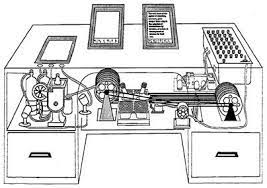
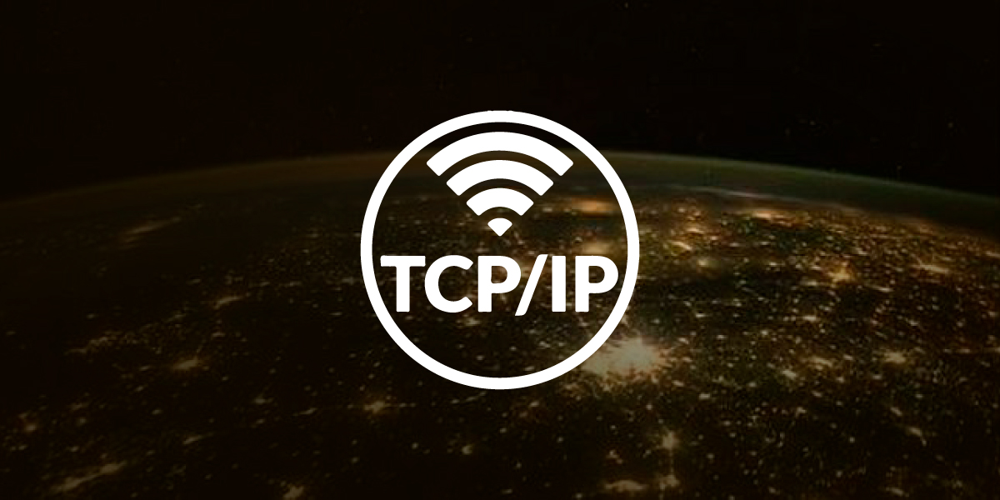
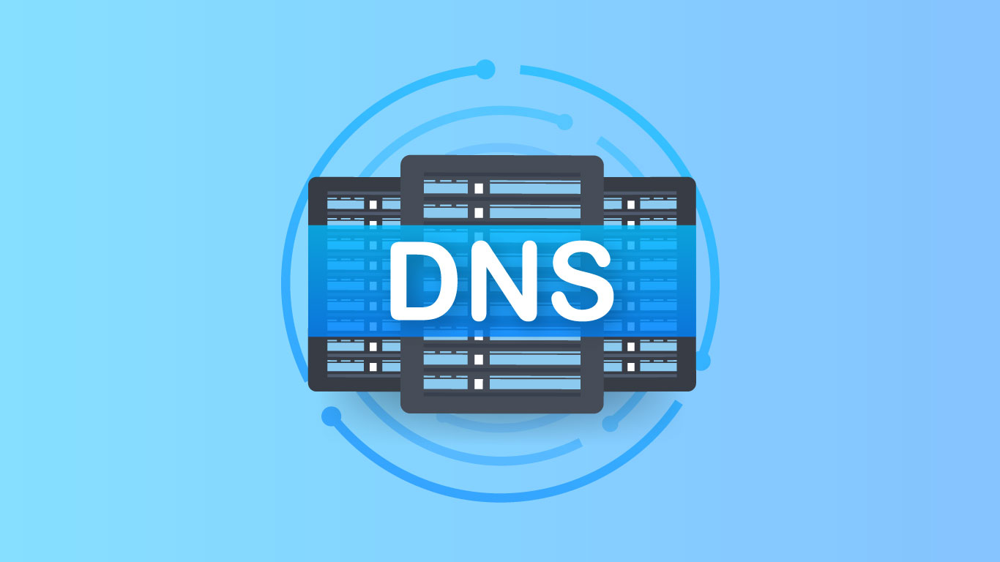

1945
Dispositivo llamado Memex para crear/seguir enlaces entre documentos y microfichas.
1958
Se crea el primer módem por la compañía BELL que permitía transmitir datos binarios sobre una línea telefónica simple.
1968

Sistema NLS (Online System), Stanford The Mother of All Demos Primer sistema con ratón, texto interactivo, videoconferencia, teleconferencia, email e hipertexto.
1969
Creación de ARPANET, la precursora de Internet, por el Departamento de Defensa de los Estados Unidos.
1974

Protocolo TPC: El Protocolo de control de transmisión, también conocido como TCP, es uno de los protocolos fundamentales de Internet.
1978
Se divide parte de TCP en IP TCP/IP.
1984
Introduce el sistema DNS Facilita la utilización de nombres lógicos de dominio.
1986
IETF: Internet Engineering Task Force Creación de estándares RFC de Internet Relacionados con la Web: TCP/IP, URI, HTTP Organización abierta formada por voluntarios.
1989

Tim Berners-Lee propone la World Wide Web (WWW) en el CERN.
1990

Tim Berners-Lee crea el primer navegador web, llamado "WorldWideWeb" (más tarde renombrado Nexus).